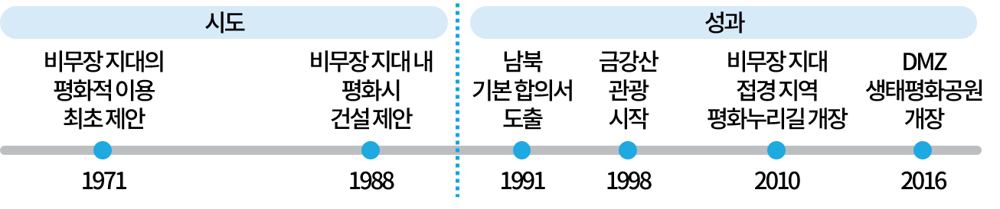

-
-
추가 질문
남한과 북한은 비무장 지대를 평화적으로 활용하려고 다양한 제안을 했고, 이러한 노력으로 비무장 지대는 중요한 성과를 거두기도 했습니다.
 -
추가 질문
생태 환경이 잘 보존된 비무장 지대는 역사적 중요성을 지니며, 한반도 통일의 꿈을 담고 있는 곳입니다. 비무장 지대는 치열했던 전쟁의 상흔을 고스란히 간직하고 있어 평화의 중요성을 되새기게 하며 평화 통일을 염원하는 마음이 들게 합니다. 또한 비무장 지대는 전쟁 때문에 파괴된 생태계가 역동적인 복원 과정을 거쳐 탈바꿈한 곳으로 한반도의 다른 장소에서는 찾아볼 수 없는 다양한 야생 동식물이 살아가고 있는 곳입니다.
-
추가 질문
이처럼 역사적 의미와 생태적 가치를 품은 비무장 지대는 우리 민족의 소중한 자산이며 ‘평화와 생명의 땅’입니다.
-
비무장 지대가 중요한 까닭은 무엇인가요?비무장 지대는 풍부한 생태 환경과
역사적 중요성을 지니고 있기 때문입니다.비무장 지대를 평화적으로 이용하고자 우리는 어떤 노력을 했나요?1971년에 비무장 지대의 평화적 이용을 제안하고,
1988년에는 비무장 지대 내 평화시 건설을 제안하였습니다.
-
다음 글을 읽고 생각해 봅시다.
-
비무장 지대는 역사적으로 어떤 의미가 있을까요?


비무장 지대는 삼국 시대부터 조선 시대까지 우리의 역사적 공간으로 중요한 위치에 있었습니다.
치열했던 6·25 전쟁의 흔적이 고스란히 남아 있는 장소입니다.